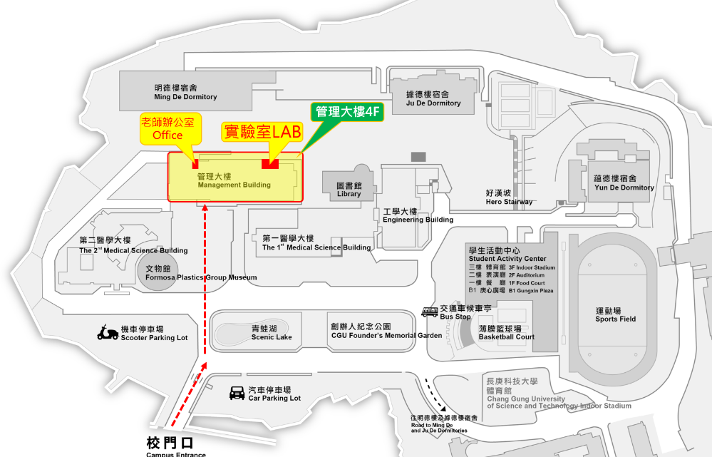

Life in LAB / 實驗室生活
實驗室位於長庚大學管理大樓，研究、課程討論與跨領域合作都在這個校園環境中展開。

校園位置圖：辦公室與實驗室位於管理大樓，從校門進入後依圖中紅色路線前往。
Visit us
Chang Gung UniversityDepartment of Computer Science and Information Engineering259 Wen-Hwa 1st Road, Kwei-Shan, Taoyuan, Taiwan 333
長庚大學資訊工程學系333 桃園市龜山區文化一路 259 號
Campus map
可直接在地圖中查看長庚大學位置；實際拜訪前建議先以 Email 聯絡。
Keep in touch
研究討論、課程合作或專題指導，歡迎提供你的問題與想做的方向。
chichinglee@cgu.edu.tw
先了解目前的研究主題與專題方向
查看實驗室活動與校園生活